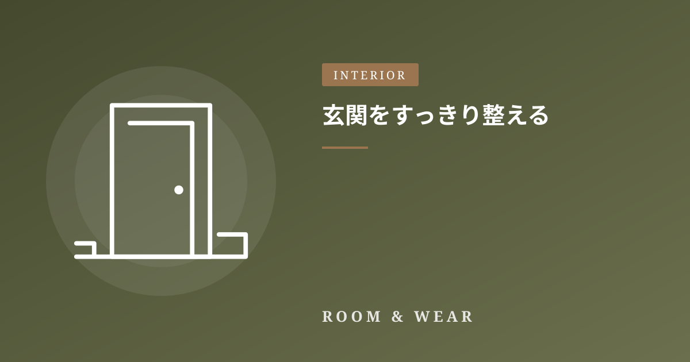

玄関をすっきり整える。狭い玄関の収納と片付けのコツ

※この記事にはアフィリエイトリンクが含まれています（広告について）。
玄関は、帰ってきたときに最初に目に入る場所。ここが整っていると、部屋全体が片付いて見えます。一人暮らしの狭い玄関でもできる、すっきり見せるコツを紹介します。
たたきに出す靴は1〜2足まで
靴が並んでいると、それだけで玄関がごちゃついて見えます。出しておくのは毎日履く1〜2足だけと決めて、ほかは靴箱にしまいましょう。
靴箱の中を整える
- 靴ホルダー：靴を上下に重ねて置けるので、収納量が増える
- 突っ張り棚：棚の間に空間が余っている場合に、段を増やせる
- 除湿剤・消臭剤：湿気やにおいがこもりやすいので、置いておくと安心
靴箱が小さい・ない場合
スリムなシューズラックを玄関横に置くと、限られたスペースでも靴を整理できます。扉付きのタイプなら、生活感を隠せます。
鍵や小物の定位置を作る
鍵、印鑑、エコバッグなど、出かけるときに使う小物は、玄関に定位置を作っておくと忘れ物が減ります。ドアに付けられるマグネットのフックやトレーが便利です。
傘の置き場所
傘立てを置くスペースがない場合は、ドアにマグネットで付けるタイプの傘ホルダーを使えば、床をすっきり保てます。
条件別に選んだ3点
記事の「靴ホルダー」「浮かせる収納」「マグネットのキーフック」で、狭い玄関に置きやすいものを選びました。リンク先は記載の色が選ばれた状態です。仕様は2026年11月17日にAmazonの販売ページで確認した内容です。編集部が実際に使用したレビューではありません。購入前に最新の情報をご確認ください。
| 商品 | 種類 | サイズ | ポイント |
|---|---|---|---|
| ライクイット 収納量2倍くつホルダー ワイド 2P | 靴ホルダー | 幅10×奥行26×高さ13.5cm・2個 | 上下2段 |
| 山崎実業 tower 浮かせる伸縮シューズラック 5631 | シューズラック | 幅45.5〜80cm | 床から浮かせる |
| 山崎実業 tower マグネットキーフック 2段 | キーフック | 幅15.8×高さ15.8cm | マグネット |
靴ホルダー
ライクイット 収納量2倍くつホルダー ワイド 2P（ホワイト）
- サイズ
- 幅約10×奥行26×高さ13.5cm（1個）
- 入数
- 2個
- 素材
- 本体：ポリプロピレン／ストッパー：EVA樹脂
- 生産国
- 日本
- 特徴
- 靴を上下2段に重ねて置けるホルダー。下駄箱の1段に入る靴の数を増やせる。
- 向いている人
- 下駄箱の靴が入りきらない人
- 注意点
- 厚底の靴やブーツは入らない場合があります。下駄箱の棚の高さを確認してください。
- 価格
- 価格・在庫は変動するため掲載していません（販売ページの確認日：2026年11月17日）。
浮かせる棚
山崎実業 tower 浮かせる伸縮シューズラック 5631（ホワイト）
- 品番
- 5631
- サイズ
- 幅約45.5〜80×奥行20.5×高さ15.5cm
- 耐荷重
- 約3kg（各バー約1.5kg）
- 対応
- 棚の厚み 約1.5〜2.8cm
- 材質
- スチール（粉体塗装）
- 特徴
- 下駄箱などの棚板に取り付けて、すき間に靴を浮かせて置けるラック。床の掃除がしやすい。
- 向いている人
- 玄関の床に靴を置きっぱなしにしたくない人
- 注意点
- 取り付ける棚板の厚みが約1.5〜2.8cmの範囲か確認してください。
- 価格
- 価格・在庫は変動するため掲載していません（販売ページの確認日：2026年11月17日）。
鍵の定位置
山崎実業 tower マグネットキーフック 2段（ブラック）
- サイズ
- 幅約15.8×奥行5.5×高さ15.8cm
- 耐荷重
- 約1kg
- フック
- 5個
- 材質
- スチール（粉体塗装）・フック：ABS樹脂
- 付属
- 木ネジ2本
- 特徴
- 玄関ドアにマグネットで付けるキーフック。鍵と小物の置き場所を決められる。
- 向いている人
- 出かける前に鍵を探すことが多い人
- 注意点
- 玄関ドアがマグネットの付く素材か確認してください。
- 価格
- 価格・在庫は変動するため掲載していません（販売ページの確認日：2026年11月17日）。
まとめ
「出す靴を減らす」「小物の定位置を作る」「ドアや壁の空間を使う」。この3つで、狭い玄関もすっきり整います。
この記事に関連するアイテムを探す
Amazonの検索結果ページに移動します。条件に合う商品を比較してお選びください。
- 靴ホルダー（2段）Amazonで商品を探す
- スリムシューズラックAmazonで商品を探す
- マグネットキーフックAmazonで商品を探す
価格・在庫・仕様は変わることがあります。購入前にAmazonの商品ページで最新の情報をご確認ください。